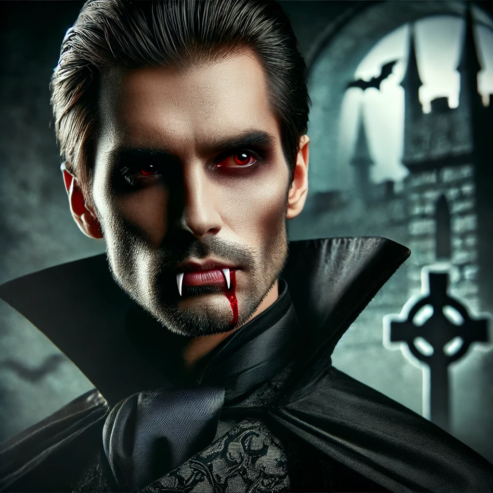
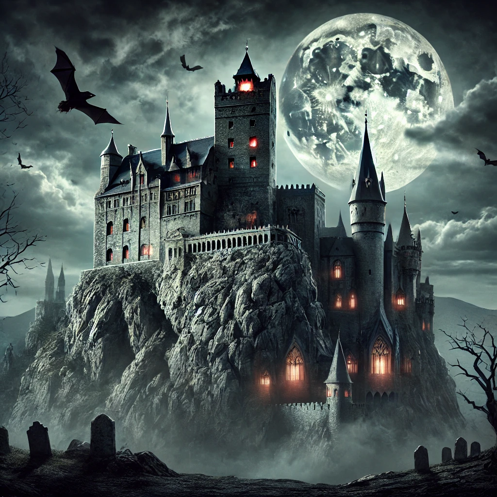

Граф Дракула
Історія графа Дракули
Деталі про життя та легенди графа Дракули занурюють нас у темний світ, де панує страх і таємниці. Дракула, відомий своєю жорстокістю і владою над ніччю, став символом безсмертя та потойбічного. Його історія оповита кровопролиттям та жахливими вчинками, які стали основою численних міфів і легенд. Протягом століть він залишав по собі слід, що лякає, вражає і зачаровує дослідників та любителів містики.
Замок Дракули
Замок графа Дракули, захований у горах Трансільванії, де, за легендами, він прожив своє життя, повне темних таємниць.